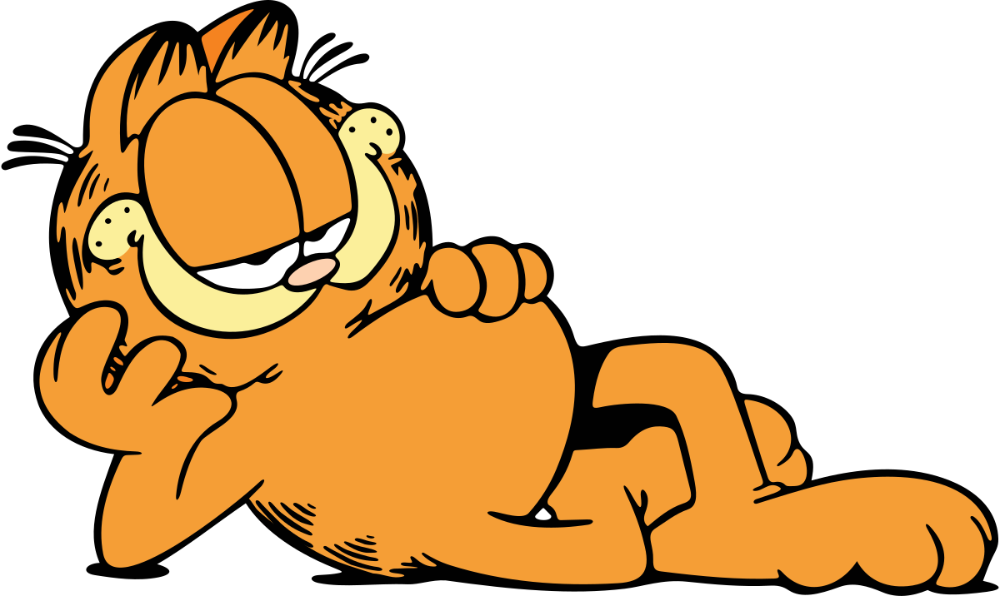

MY 297TH WEBSITE!!
professional
main
secondary/alternatives
- Rowan
- Lily
- Mandy
- Ally Morgone
- Frewn
- Emily
- Vo
- Marceline
- Hamachi
- Tracy
- Frankie
- Sophie
- Heather
- paws
- Toto
- Jake
- Ami
- Toro
- Sarah
- zeke/zek
aliases/fun/playful
- nintendofan
- midi
- internet suicidal princess
- neuwrod
- piano
- cassie
- digi03
- depressed magical autistic girl
- swagbackpack
- clocktower
- midi prophet
- toon
- tree
- friend
- hyrule
- armor
- flipnote
- hatena
- cannibal
- emy
- vivian
- dj yung threaten
- mediafiregawd
- djm
- partyrevolver
- sevenaightangels
- yoe
- hoodwitch
- puzzle
- concept
- warrior
- yendelrist
- dj flipnote hatena
DOOR TRAP @ THE ABANDONED ROOM
CONTINUE THE RAGE
I CAN DESCRIBE THE LUNGS AND FEELS
TUFF SITUATIONS
ABOUT WHO?
I ALWAYS PUT MY PRAYERS UP UPON THE SKY AND NEVER LIVES
I GO BY INSANE PLETHORA OF NAMES BUT MELANIE OR ZACKARY IS MAIN
I'M A QUEER NON BINARY TRANSSEXUAL NEURODIVERGENT DIY ARTIST FROM QUEBEC, RAISED IN MTL & CURRENTLY LIVES IN LAVAL.
I CREATE VISUAL ART, MUSIC AND WRITING STUFF.
I WAS AROUND YOUTUBE, SCRATCH, TWITTER AND MANY COMMUNITIES & PLACES ON THE INTERNET AROUND 2013/2014, MAKING YTPS, LOGO EDITS & SUCH USING PLENTY OF USERNAMES. I'M USUALLY INTERESTED IN MUSIC, ART, CARTOONS AND VARIOUS OF STUFF AND LIKE TO DISCOVER NEW VARIOUS THINGS BUT MY BIGGEST ONE YET IS NOSTALGIA AND OLD RETRO SUBJECTS & DESIGNS WITH ME BEING MENTALLY STUCK IN PAST. I'M ALSO INTO HUGE THINGS LIKE TELETOON, YTV, TREEHOUSE AND ALL OF THAT. I ALSO LIKE TO HYPERFIXATE ON DIFFERENT GENRE OF CONTENT I CONSUME FOR MONTHS TO AN END AND HAVE TONS OF SPECIAL INTERESTS, I MAINLY DON'T TALK ABOUT A LOT BUT IF YOU'VE SEEN MY PFP, LAYOUTS OR MY STRAWPAGE INTERESTS, YOU'LL KNOW.
DID I MENTION I WAS TRANS? I THINK YEAH. I DO HAVE A LOT OF LABELS BUT I DON'T THINK IT'S WORTH LISTING THEM SO I COULD PROBABLY SAY I'M A QUEER AND CARE LESS ABOUT IT, EVEN FOR SOMEONE WHOSE VOICE KINDA LIL BIT DEEP BUT WHATEV. I'M ALSO MIXED AND VERY FLUID WHATSOEVER SO U COULD SAY I'M A BOYGIRL, GIRLBOY, GIRLBOSS, BOYBOSS, WHATEVER FITS INTO ITS OWN SHELL AND PREFERRED USE SHE , THEY , IT PRONOUNS BUT GOES ALL OF IT. I ALSO HAVE CHARACTERISTIC THAT IS VERY FLUID OVERTIME SO I MAY SWITCH LAYOUTS AND BUNCH OF STUFF AS A WHOLE TO KEEP MY THINGS VERY UPDATE AND STABLE, IT REALLY DEPENDS ON MY MOOD. I'M ALSO A INSANE PERSON THAT SEEMS TO BE VERY TROLLEY AND TALKATIVE IF I GET TOO COMFORTABLE AROUND AND RESULT ME TO ME SCREECHING AND DO THINGS THAT AREN'T USUAL TO ANY NEUROTYPICAL PEOPLE. MY BRAIN CAN GET REAL SOUR FROM TIMES TO TIMES... X﹏X
DISCORD SERVER (SEMI ACTIVE BUT HELL AND CONFUSION)
SOCIALS
ALL THE PRONOUNS AND WOKE STUFF (AMIRITE?)
MY MEDIA CONSUMMING STRAWPAGE